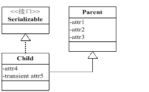

java序列化
简介
Java序列化用于作为一种将Java对象的状态转换为字节数组，以便存储或传输的机制，以后，仍可以将数组转换为Java对象原有的状态。
一般使用时，只需要被序列化的类实现Serializable接口，使用ObjectInputStream和ObjectOutputStream进行对象的读写。
高级认识
序列化ID
虚拟机是否允许反序列化，不仅取决于类路径和功能代码是否一致，另一个非常重要的因素是两个类的序列化ID是否一致（serialVersionUID）。
序列化ID在Eclipse下有两种生产策略，一个是固定的1L，一个是随机不重复的long型数据。如果没有特殊需求，使用默认的1L就可以。
静态变量
序列化保存的是对象的状态，静态变量属于类的状态，因此序列化并不保存静态变量。
public class Test implements Serializable {
private static final long serialVersionUID = 1L;
public static int staticVar = 5;
public static void main(String[] args) {
try {
//初始时staticVar为5
ObjectOutputStream out = new ObjectOutputStream(
new FileOutputStream("result.obj"));
out.writeObject(new Test());
out.close();
//序列化后修改为10
Test.staticVar = 10;
ObjectInputStream oin = new ObjectInputStream(new FileInputStream(
"result.obj"));
Test t = (Test) oin.readObject();
oin.close();
//再读取，通过t.staticVar打印新的值
System.out.println(t.staticVar);
///输出的是10，而不是5
} catch (FileNotFoundException e) {
e.printStackTrace();
} catch (IOException e) {
e.printStackTrace();
} catch (ClassNotFoundException e) {
e.printStackTrace();
}
}
}
父类的序列化与Transient关键字
要想将父类对象也序列化，就需要让父类也实现Serializable接口。如果父类不实现的话，就需要默认的无参构造函数。
Transient关键字的作用是控制变量的序列化，在变量声明前加上该关键字，可以阻止该变量被序列化到文件，反序列化时，Transient变量的值被设为初始值，如int型为0，对象行为null。

上图中可以看出，attr1、attr2、attr3、attr5 都不会被序列化，放在父类中的好处在于当有另外一个 Child 类时，attr1、attr2、attr3 依然不会被序列化，不用重复抒写 transient，代码简洁。
对敏感字段加密
在序列化过程中，虚拟机会试图调用对象类里的writeObject和readObject方法，进行用户自定义的序列化和反序列化，如果没有这样的方法，默认调用的是ObjectOutputStream的defaultWriteObject方法已经ObjectInputStream的defaultReadObejct方法。
private static final long serialVersionUID = 1L;
private String password = "pass";
public String getPassword() {
return password;
}
public void setPassword(String password) {
this.password = password;
}
private void writeObject(ObjectOutputStream out) {
try {
PutField putFields = out.putFields();
System.out.println("原密码:" + password);
password = "encryption";//模拟加密
putFields.put("password", password);
System.out.println("加密后的密码" + password);
out.writeFields();
} catch (IOException e) {
e.printStackTrace();
}
}
private void readObject(ObjectInputStream in) {
try {
GetField readFields = in.readFields();
Object object = readFields.get("password", "");
System.out.println("要解密的字符串:" + object.toString());
password = "pass";//模拟解密,需要获得本地的密钥
} catch (IOException e) {
e.printStackTrace();
} catch (ClassNotFoundException e) {
e.printStackTrace();
}
}
public static void main(String[] args) {
try {
ObjectOutputStream out = new ObjectOutputStream(
new FileOutputStream("result.obj"));
out.writeObject(new Test());
out.close();
ObjectInputStream oin = new ObjectInputStream(new FileInputStream(
"result.obj"));
Test t = (Test) oin.readObject();
System.out.println("解密后的字符串:" + t.getPassword());
oin.close();
} catch (FileNotFoundException e) {
e.printStackTrace();
} catch (IOException e) {
e.printStackTrace();
} catch (ClassNotFoundException e) {
e.printStackTrace();
}
}
序列化存储规则
Java序列化机制为节省磁盘空间，具有特定的存储规则，当写入文件的为同一对象时，并不会将对象的内容进行存储，而只是再次存储一份引用。
ObjectOutputStream out = new ObjectOutputStream(
new FileOutputStream("result.obj"));
Test test = new Test();
//试图将对象两次写入文件
out.writeObject(test);
out.flush();
System.out.println(new File("result.obj").length());
//31
out.writeObject(test);
out.close();
System.out.println(new File("result.obj").length());
//36
ObjectInputStream oin = new ObjectInputStream(new FileInputStream(
"result.obj"));
//从文件依次读出两个文件
Test t1 = (Test) oin.readObject();
Test t2 = (Test) oin.readObject();
oin.close();
//判断两个引用是否指向同一个对象
System.out.println(t1 == t2);
// 结果为true
日期：2012-11-20